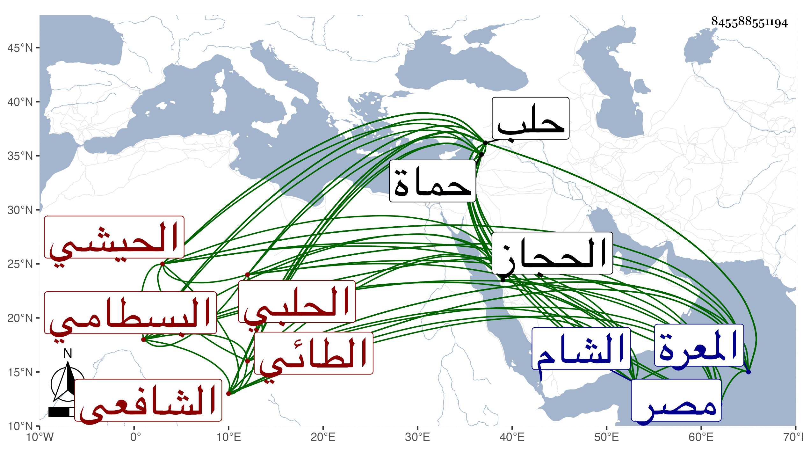

0902Sakhawi.DawLamic.ITO20230111-ara1.EIS1600.845588551194
Biography ID: 845588551194
263
أبو بكر بن نصر بن عمر بن هلال الشرف الطائي كان يسوق نسبه لعمرو بن معدى كرب بن زيد الخير الحيشي الحلبي البسطامي الشافعي الماضي حفيده أبو بكر بن محمد وابنه ويعرف بالحيشي . ولد بقرية حيش من عمل حماة بالقرب من المعرة وفارقها وهو ابن عشر فنزل المعرة واشتغل بها على شيوخها وكانت له فيها زاوية وأتباع ثم تحول منها في سنة ست عشرة وثمانمائة إلى حلب فقطنها بدار القرآن العشائرية للخطيب العلاء بن عشائر حتى مات ومن شيوخه في التصوف الجلال عبد الله البسطامي ومحمد القرمي وكذا أخذ عن الشهاب بن الناصح في آخرين أخذ عنه جماعة منهم صاحبنا البرهان القادري ومواخيه الزين قاسم الحيشي وكان عالما زاهدا ورعا متعبدا بالتلاوة والمطالعة مداوما على الطهارة الكاملة سليم الصدر كريما مقصودا بالزيارة ذا مروءة وتودد وقيام بمصالح مع جمال الصورة وحسن الشمائل وللناس فيه اعتقاد ووجاهته في ناحيته متزايدة وأتباعه كثيرون بحيث كان له في حلب ونواحيها خمس عشرة زاوية مشحونة بالفقراء البسطامية بل انتهت إليه سيادة البسطامية بالمملكة الشامية بدون مشارك أخبرني بأكثره وبأزيد منه حفيده وكتبه لي بخطه وقال لي إن شيخه أبا ذر قال له إن والده قال له لازم صحبته تسعد فإن نظره ما وقع على أحد إلا وأفلح وما رأيت في عصري نظيره وما حصل لي الخير إلا بصحبته قال أبو ذر وما كان أبي يبدأ في قراءة البخاري حتى يستأذنه تبركا وأول سنة قرأت أنا الحديث بجامع حلب عرض لي في صوتي شيء بحيث ما كدت أنطق وعجز والدي عن مداواتي إلى أن دخلت عليه يوما أطلب بركته فوجدته يأكل كشكا بزيت فأمرني بالأكل معه فلم تمكني مخالفته فكان الشفاء فيه وأعلمت والدي بذلك فقال أو ما علمت أن طعامه شفاء والله ما أشك في كراماته ولما ورد التقي الحصني حلب زاره في زاويته وقال ما رأيت مثله وكذا قيل إن شيخنا زاره وتأدب معه جدا والتمس دعاءه وقال ابن الشماع طفت بلاد مصر والشام والحجاز فما وقع بصري على نظيره وقال ابن خطيب الناصرية أنه ما رأى مثل نفسه ولم يزل على وجاهته حتى مات بعد تعلله بالفالج مدة في ليلة الجمعة تاسع عشر رجب سنة ست وأربعين وقد قارب التسعين رحمه الله ونفعنا به .
